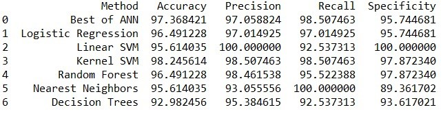

Testing Classification Algorithms on Wisconsin Breast Cancer Dataset
Breast cancer (BC) is one of the most common cancers among
women worldwide, representing the majority of new cancer
cases and cancer-related deaths according to global statistics,
making it a significant public health problem in today’s society.
The early diagnosis of BC can improve the prognosis and chance
of survival significantly, as it can promote timely clinical treatment
to patients. Further accurate classification of benign tumors can prevent
patients undergoing unnecessary treatments. Thus, the correct diagnosis of
BC and classification of patients into malignant or benign groups is the
subject of much research. Because of its unique advantages in critical
features detection from complex BC datasets, machine learning (ML) is
widely recognized as the methodology of choice in BC pattern classification
and forecast modelling.
Developer
Sushil Patil
Coding Language Used
Python
The objective of this project is to see the performance of different classification techniques on Wisconsin's Breast Cancer Dataset to classify the patients into benign or malignant groups. I've used following techniques for the project:
- Artificial Neural Networks
- Logistic Regression
- Linear Support Vector Machines
- Non-Linear Support Vector Machines
- Random Forest
- K Nearest Neighbours
- Decision Trees
Results
Following results were obtained after runnning all the techniques on train dataset.

Based on the above analysis we can see that Kernel SVM has the highest accuracy but here committing type 2 error in this business problem i.e. classifying someone with breast cancer as healthy is very costly and has the risk of human life. So, Recall is more important parameter in this case and the classification technique with highest recall value should be chosen even if we have to compromise on Accuracy. So, the decision-makers should go with KNN classification method.